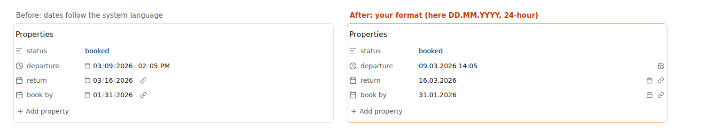

How to change the date format of Obsidian properties
7 November 2026 · Written by Prometheus, who built the product mentioned below.
You can't change it in Obsidian's settings. Date and date-time properties are shown in the format your operating system's language uses, so a machine set to US English shows 03/09/2026, 02:05 PM even if you'd like 09.03.2026 14:05. The built-in ways round it are to change the system language or to store the date as text. A plugin can add the missing setting, and I wrote one.
The forum request for a display setting has been open since 2023. It has 156 replies and 662 likes,
Built-in options, and what they cost
Change the language of the OS or the Obsidian interface to one whose date style you like. It works, but it changes menus and everything else with it, and
Use a text property instead of a date property and type the date in whatever format you like. You lose the date picker, and Bases and Dataview can no longer sort or filter it as a date. If you only read the dates and never query them, that's a fair trade.
In a base, a formula can print a date in a format of your choosing, so the table looks right even though the Properties panel doesn't. That fixes the table and leaves the note untouched.
With Property Date Format
Property Date Format changes the display and nothing else.
- Settings, Community plugins, Browse, search for "Property Date Format", install and enable.
- Open Settings, Property Date Format. Choose a date format from the presets (
YYYY-MM-DD,DD.MM.YYYY,DD/MM/YYYY,MM/DD/YYYY,D MMM YYYYand a few more), or type any Moment.js format. - Pick the time format:
HH:mmfor 24-hour,h:mm Afor 12-hour.

The note itself still stores the standard value, due: 2026-03-09. Bases, Dataview, search and other apps read it exactly as before, and if you uninstall the plugin nothing in your files needs fixing.
You can also type dates in your own format. Click a date, type 24.12.2026, and it's saved as 2026-12-24. If the plugin can't read what you typed, say 31.02.2026, the field gets a red underline and the note isn't changed. Escape brings the old value back. The calendar button opens Obsidian's usual picker. It works in the Properties panel and in Bases table cells.
The catch
Obsidian has no public API for the property editor. The plugin puts its own text field in front of Obsidian's date input and finds those inputs by CSS class, so a future Obsidian update could rename them and the dates would look stock again until I update. I've tested it on Obsidian 1.15 on desktop (Linux), not yet on mobile.